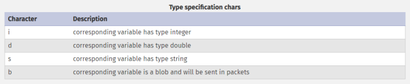

Parameterized Queries
Parameterized Queries
Another way to ensure that the input is safely sanitized is by using parameterized queries.
Parameterized queries contain placeholders for the input data, which is then escaped and passed on by the drivers. Instead of directly passing the data into the SQL query, we use placeholders and then fill them with PHP functions.
PHP: vulnerable authentication code<SNIP>
$username = $_POST['username'];
$password = $_POST['password'];
$query = "SELECT * FROM logins WHERE username='". $username. "' AND password = '" . $password . "';" ;
echo "Executing query: " . $query . "<br /><br />";
if (!mysqli_query($conn ,$query))
{
die('Error: ' . mysqli_error($conn));
}
$result = mysqli_query($conn, $query);
$row = mysqli_fetch_array($result);
<SNIP>
<SNIP>
$username = $_POST['username'];
$password = $_POST['password'];
$query = "SELECT * FROM logins WHERE username=? AND password = ?" ;
$stmt = mysqli_prepare($conn, $query);
mysqli_stmt_bind_param($stmt, 'ss', $username, $password);
mysqli_stmt_execute($stmt);
$result = mysqli_stmt_get_result($stmt);
$row = mysqli_fetch_array($result);
mysqli_stmt_close($stmt);
<SNIP>
◇ PHP
mysqli_stmt_bind_param() → This function will safely escape any quotes in the parameters and binds Binds them to a prepared statement as parameters.
▪ The original
example vulnerable query is been modified to contain two placeholders, marked with
? where the username and password will be placed.
▪ The second input of the function specify the types of the corresponding bind variables
